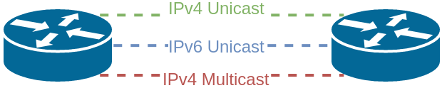
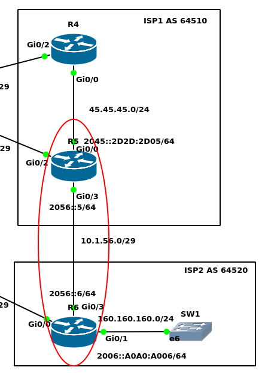

BGP Support for IPv6 (Multiprotocol BGP)
BGP v4 was originally intended to carry only IPv4 route information
Multiprotocol BGP (MP-BGP) supports:
- Unicast and Multicast IPv4
- Unicast and Multicast IPv6
- IPv4 and IPv6 route information within customer VRF
- VPNv4 (for use in MPLS L3 VPN), VPNv6, L2VPN, VPLS: not covered in the ROUTE curriculum
Rather than inventing new protocols to carry this information, BGP was modified
with multiprotocol extensions in RFC 2283MP-BGP uses two new BGP attributes inside the update message. Each of these new attributes will contain one or more AFI (address-family information) that communicates the protocols the prefixes being advertised apply to (IPv4, IPv6, etc)
- Multiprotocol Reachable NLRI (MP_REACH_NLRI): contains the reachable prefixes for a particular address-family
- Multiprotocol Unreachable NLRI (MP_UNREACH_NLRI): contains the unreachable or withdrawn prefixes for a particular address-family
Traditionally when R1 and R2 wanted to talk BGP, they would just set up a TCP session and over that TCP session they would have a BGP neighbor peering and over that neighbor peering they would exchange IPv4 unicast routing information.
MP-BGP by default, only has the IPv4 unicast family activated. BGP does not use multicast addresses itself, it will always use a TCP session between two neighbors.
Imagine, we want to exchange routing information for three different things. (IPv4 Unicast, IPv6 Unicast, and IPv4 Multicast) With MP-BGP we have a BGP neighbor session for each particular address family. In this case, we would have three different BGP neighbor sessions, one for each protocol.

Configuration

R5(config)#router bgp 64510 R5(config-router)#address-family ipv4 unicast R5(config-router-af)#do show run | s bgp router bgp 64510 bgp log-neighbor-changes neighbor 2.2.2.2 remote-as 64500 neighbor 2.2.2.2 ebgp-multihop 2 neighbor 2.2.2.2 update-source Loopback0 neighbor 4.4.4.4 remote-as 64510 neighbor 4.4.4.4 update-source Loopback0 neighbor 6.6.6.6 remote-as 64520 neighbor 6.6.6.6 ebgp-multihop 2 neighbor 6.6.6.6 update-source Loopback0 ! address-family ipv4 network 45.45.45.0 mask 255.255.255.0 neighbor 2.2.2.2 activate neighbor 4.4.4.4 activate neighbor 4.4.4.4 next-hop-self neighbor 6.6.6.6 activate exit-address-family
We see we have got 2 sections:
our underlying BGP configuration (neighbors) - TCP connection
Address-family, we have the specific configuration. Our policies, prefix-lists, route-maps, what we are advertising in, and… Let us convert R6’s BGP configuration now:
R6(config)#router bgp 64520 R6(config-router)#address-family ipv4 unicast R6(config-router-af)#do show run | s bgp router bgp 64520 bgp log-neighbor-changes neighbor 3.3.3.3 remote-as 64500 neighbor 3.3.3.3 ebgp-multihop 2 neighbor 3.3.3.3 update-source Loopback0 neighbor 5.5.5.5 remote-as 64510 neighbor 5.5.5.5 ebgp-multihop 2 neighbor 5.5.5.5 update-source Loopback0 ! address-family ipv4 redistribute connected route-map RDtoBGP neighbor 3.3.3.3 activate neighbor 3.3.3.3 route-map RmASPATH in neighbor 5.5.5.5 activate exit-address-family
To verify here so far because we configured IPv4 unicast, we can use traditional BGP commands like:
R6#show ip bgp BGP table version is 5, local router ID is 6.6.6.6 Status codes: s suppressed, d damped, h history, * valid, > best, i - internal, r RIB-failure, S Stale, m multipath, b backup-path, f RT-Filter, x best-external, a additional-path, c RIB-compressed, Origin codes: i - IGP, e - EGP, ? - incomplete RPKI validation codes: V valid, I invalid, N Not found
Network Next Hop Metric LocPrf Weight Path
12.12.12.0/24 3.3.3.3 0 64500 64500 64500 64500 i *> 5.5.5.5 0 64510 64500 i
13.13.13.0/24 5.5.5.5 0 64510 64500 i > 3.3.3.3 0 0 64500 i > 45.45.45.0/24 5.5.5.5 0 0 64510 i *> 160.160.160.0/24 0.0.0.0 0 32768 ?
But we cannot verify for other protocols using
show ip bgp ..., instead we useshow bgp <protocol>for example:R6#show bgp ipv4 unicast BGP table version is 5, local router ID is 6.6.6.6 Status codes: s suppressed, d damped, h history, * valid, > best, i - internal, r RIB-failure, S Stale, m multipath, b backup-path, f RT-Filter, x best-external, a additional-path, c RIB-compressed, Origin codes: i - IGP, e - EGP, ? - incomplete RPKI validation codes: V valid, I invalid, N Not found
Network Next Hop Metric LocPrf Weight Path
12.12.12.0/24 3.3.3.3 0 64500 64500 64500 64500 i *> 5.5.5.5 0 64510 64500 i
13.13.13.0/24 5.5.5.5 0 64510 64500 i > 3.3.3.3 0 0 64500 i > 45.45.45.0/24 5.5.5.5 0 0 64510 i *> 160.160.160.0/24 0.0.0.0 0 32768 ?
IPv6 routing over an IPv4 BGP Session
R5(config)#ipv6 unicast-routing R5(config)#route-map IPV6-NEXT-HOP R5(config-route-map)#set ipv6 next-hop 2056::5 R5(config)#router bgp 64510 R5(config-router)#address-family ipv6 R5(config-router-af)#network 2045::/64 R5(config-router-af)#neighbor 6.6.6.6 activate R5(config-router-af)#neighbor 6.6.6.6 route-map IPV6-NEXT-HOP out R5(config-router-af)#exitR6 configuration:
R6(config)#route-map IPv6-NEXT-HOP permit R6(config-route-map)#set ipv6 next-hop 2056::6 R6(config)#router bgp 64520 R6(config-router)#address-family ipv6 R6(config-router-af)#network 2006::/64 R6(config-router-af)#neighbor 5.5.5.5 activate R6(config-router-af)#neighbor 5.5.5.5 route-map IPv6-NEXT-HOP out R6(config-router-af)#do clear bgp all 64510 softVerification
R5#show bgp ipv6 unicast
BGP table version is 8, local router ID is 5.5.5.5
Network Next Hop Metric LocPrf Weight Path
*> 2006::/64 2056::6 0 0 64520 i
*> 2045::/64 :: 0 32768 i